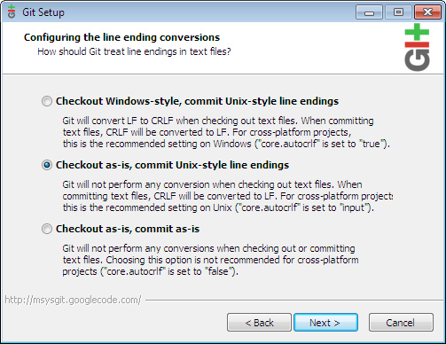

|
This page is an install guide that describes how to get up and running with Hosted Chef as quickly as possible and ends with a fast demonstration on how to work with cookbooks.This Installation Guide uses the new Windows Full Installer.Hosted and Private Chef customers should contact support@opscode.com with any issues. Open Source users may interact in open source support channels, open a Bug Report with project "CHEF", component "Packages", label "omnibus", if necessary. If you want to install Chef manually instead, see the Installation page. In order to make this as quick as possible, we make a few assumptions. If your system does not meet these assumptions, you will need to use the Installation instructions that apply for the "flavor" of Chef you are installing. Hosted ChefWe're using Hosted Chef so we can get started right away without setting up a Chef Server. If you want to set up your own server instead, head over to the Installation page. |
|

Operating SystemChef runs on many popular Unix and Linux platforms as well as Mac OSX and Windows. We will describe how to set up using Windows 2008 R2 as a workstation and a client, but these are general directions that will also apply to Windows 7. These directions are known to not work for Windows Server 2003 or on systems that have spaces in the %HOMEPATH%. For instructions on these, see the workstation installation page or the client installation page for Windows. There is also a Fast Start Guide which goes over these same instructions for Linux and OS X. For other OS-specific instructions, go to the section of Installation that applies to the "flavor" of Chef you are installing, and proceed from there. (See system requirements for details on what platforms Chef is known to run upon.) Management Workstation as a ClientIn this guide we will be setting up a management workstation as a client. This means that the one node we set up here can be used to both manage your cookbooks and configuration in Hosted Chef, as well as use chef-client to run recipes on it. (If you already have a workstation configured and just want to add a Linux or Mac client node, see the Client Bootstrap Fast Start Guide. Installation for Windows clients is described in the Installing Chef Client on Windows guide) The Difference Between a Management Workstation and a Client
If you'd like more information on these terms, the wiki page on Architecture Introduction has a very detailed explanation. We will be setting up the client node as both in this guide.
You do not have to set up your management workstation to be a chef-client. If you prefer not to:
This guide is going to direct you through the following steps: 1. Create a Hosted Chef account At the end of this guide you will have a workstation setup with chef-client installed, a recipe downloaded and added to the node's run_list. These steps end with the recipe being run on the node by Chef. Step 1: Create a Hosted Chef accountWorking with Chef is primarily done from a local workstation. Changes are made locally and uploaded to the Chef Server. Since we're using Hosted Chef as the Chef Server, you'll need to sign up for an account if you haven't already. (Don't worry! We won't charge you to use Hosted Chef for this guide - you can set up up to 5 nodes for free.) Would you like to have screenshots walk you through the actions in this step instead? If so, head over to Setup Opscode User and Organization which will guide you through creating a new organization, and then return here to the next step once complete. If you have already created your Organization, there are directions on how to recreate the organization key and download the knife config on the Managing Organizations with the Hosted Chef Management Console page and recreating existing user keys is explained on the Managing Users with the Hosted Chef Management Console page. Head over to the Hosted Chef Sign Up page to create your account. You will get an email validation shortly after you sign up. After you complete the sign-up, create an organization in the Console page, and then download the following files:
The private keys are not stored by Hosted Chef. Download them to your local system, we'll use them in Step #5. Step 2: Install Chef and DependenciesThis Installation Guide uses the new Windows Full Installer. It has been tested, but as it is newly released, Hosted and Private Chef customers should contact support@opscode.com with any issues. Open Source users may interact in open source support channels, opening a Bug Report with project "CHEF", component "Packages", label "omnibus", if necessary. Install ChefDownload the Chef Full Installer for Windows and open it. Choose defaults for any options. Once it is installed there will be no icon for it. If needed, you can confirm it was installed correctly with these commands in a new command prompt window: C:\> tar --version bsdtar 2.8.3 - libarchive 2.8.3 C:\> chef-client --version You should see "Chef: 10.12.0" returned as the version number. Install GitGit isn't needed to set up a node as a client, but it will be needed to set up a node as a workstation and follow the steps on this page. Workstations are able to download recipes from the Community Site, edit them, and them upload them to Hosted Chef. Once they are uploaded to the server any node that has been set up as a client or workstation will be able to use them. Clients do not need git installed but are unable to directly edit the recipes or upload changes to Hosted Chef without it. You will want at least one workstation set up to manage your organization. These directions walk you through setting up a workstation, for specific instructions on setting up a client instead, or using a workstation without git and tar on Windows, see the Installation page. Download the Git Full installer for Windows and install it. To make Git easily accessible from normal Windows Command Prompts, be sure to choose the 'Run Git from the Windows Command Prompt' option.
For the line ending conversions option be sure to choose: 'Checkout as-is, commit Unix-style line endings'. Your fellow developers on *nix platforms will thank you!  If you'd like, you can confirm Git is now installed properly with this command in a new command prompt window: C:\> git --version git version 1.7.11.msysgit.0 Make sure that you close any command prompt windows after installing Git and Chef and re-open them, or some commands will not be available. Step 3: Configure Chef and create the needed directoriesNow that Chef and all the dependancies are installed, we will need to get the chef repository and set up the authentication files. You will see the variable %HOMEPATH% mentioned in these directions. You do not need to change this variable to an path and you can keep this as %HOMEPATH% in commands, Windows will know this is an alias for the path to your home directory. Building infrastructure with Chef is like managing source code, so one of the first things we need to do is build the repository you'll use. You will need git installed to follow this step. C:\> cd %HOMEPATH% C:\Users\username> git clone git://github.com/opscode/chef-repo.git Knife reads configuration from the .chef directory, so we'll need to make that directory. You must use the mkdir command below to do this, as creating the file any other way will not allow you to name it '.chef': C:\> mkdir %HOMEPATH%\chef-repo\.chef Copy the keys and knife configuration you downloaded earlier into this directory. For example if they are in the 'C:\Users\<username>\Downloads' directory you could use these commands: C:\> move %HOMEPATH%\Downloads\knife.rb %HOMEPATH%\chef-repo\.chef
1 file(s) moved.
C:\> move %HOMEPATH%\Downloads\USERNAME.pem %HOMEPATH%\chef-repo\.chef
1 file(s) moved.
C:\> move %HOMEPATH%\Downloads\ORGANIZATION-validator.pem %HOMEPATH%\chef-repo\.chef
1 file(s) moved.
Replace USERNAME above with your Hosted Chef Username, and ORGANIZATION with the short-name you provided when you signed up.
Editing the knife.rb with the cookbook pathYou will also need to edit the knife.rb to provide the full path to the cookbooks. You can do this by going to your home directory, entering the chef-repo directory, and then the .chef directory, and editing the knife.rb file. You will want to open it in Wordpad, and look for this line: cookbook_path ["#{current_dir}/../cookbooks"]
If you see this, you'll want to change it to the directory below or some knife commands will fail: cookbook_path ["#{ENV['HOME']}/chef-repo/cookbooks"]
Step 4: Connect to Hosted ChefRun the following command to confirm knife is working with the Hosted Chef API. C:\> cd %HOMEPATH%\chef-repo
C:\Users\username\chef-repo> knife client list
ORGANIZATION-validator
You should start out already in the home directory when you first launch command prompt, so normally you can just enter cd chef-repo to get to the correct directory. The cd command above will work no matter which directory you are in. NOTE: knife commands will only work in the chef-repo directory unless you add -c %HOMEPATH%\chef-repo\.chef\knife.rb to the end of the command to specify where the knife config is located. This command would work from any directory: C:\> knife client list -c %HOMEPATH%\chef-repo\.chef\knife.rb
ORGANIZATION-validator
The Workstation part of the install is now completeYou should now have a fully functional Management Workstation from which to interact with Chef and automate your infrastructure. The workstation is now able to download and upload recipes, and manage nodes with knife. At this point you have two options. You can either continue this guide and configure this workstation as a client so it can run recipes as well, or you can set up chef-client on a separate node and use the workstation you just created to manage it remotely. If you'd like to set up a separate Ubuntu client so you can manage it remotely, please follow the Client Bootstrap Fast Start Guide. If you'd like to set up a separate Windows node as a client, you could do this with the Knife Windows Bootstrap plugin or with the Installation guide for Windows clients. The rest of this guide assumes that you want to configure this workstation as a client. Step 5: Configure the workstation as a clientYou can configure chef-client with these commands: C:\> cd %HOMEPATH%\chef-repo C:\Users\username\chef-repo> knife configure client C:\chef Creating client configuration Writing client.rb Writing validation.pem
C:/> chef-client [2012-06-20T16:23:14-07:00] INFO: *** Chef 10.X.X *** [2012-06-20T16:23:24-07:00] INFO: Client key C:\chef\client.pem is not present - registering [2012-06-20T16:23:29-07:00] INFO: Run List is [] ... output truncated ... [2012-06-20T16:23:31-07:00] INFO: Report handlers complete Keep in mind that chef-client may need elevated privileges to run successfully, depending on what you are adding to your cookbooks. You can read more about how to set this up in Running Chef Client with Elevated Privileges. Once this is done, you can confirm this node was added with knife: C:\> cd %HOMEPATH%\chef-repo
C:\Users\username\chef-repo> knife client list
ORGANIZATION-validator
NODENAME
Instead of NODENAME you should see the name of your node here. The Client install is now completeAt this point, your node is now configured as a management workstation and a client. The next steps explain how to add a recipe and run it on this node. If you are already familiar with Chef, you can skip the rest of the guide and it will have no impact on your install. Step 6: Download a Cookbook from the Community SiteNow that Chef is installed, we can add a recipe to the run list and run it on this node. We're going to use the getting-started cookbook as an example. First you'll need to configure git, replacing USER@EMAIL.com with your email address: C:\> git config --global user.email "USER@EMAIL.com" Once this is configured you can install the cookbook. In this example we are going to download the getting-started cookbook from the community site. You will need to move back to the chef-repo directory as knife commands will not work without -c in other directories. C:\> cd %HOMEPATH%\chef-repo C:\Users\username\chef-repo> knife cookbook site install getting-started Installing getting-started to C:/Users/username/chef-repo/cookbooks Checking out the master branch. Pristine copy branch (chef-vendor-getting-started) exists, switching to it. ... output truncated ... Cookbook getting-started version 0.4.0 successfully installed Step 7: Upload a Cookbook to Hosted ChefNext, upload the cookbook to your Hosted Chef account so it is available for systems that run the chef-client. C:\Users\username\chef-repo> knife cookbook upload getting-started Uploading getting-started [0.4.0] upload complete Step 8: Add a Cookbook to the run_listNow you will want to add this cookbook to the run_list for this node. The run_list is a list of the recipes and roles that chef-client will run on the node. You can add it with this command, substitute the name of your node for NODENAME: C:\Users\username\chef-repo> knife node run_list add NODENAME 'recipe[getting-started]' run_list: recipe[getting-started] Step 9: Run chef-clientYou can now run the chef-client on this node and it will run the recipe you've added: C:/> chef-client C:\Users\Opscode\chef-repo>chef-client [2012-06-20T17:27:00-07:00] INFO: *** Chef 10.X.X *** [2012-06-20T17:27:17-07:00] INFO: Run List is [recipe[getting-started]] ... output truncated ... [2012-06-20T17:27:21-07:00] INFO: Report handlers complete The first thing Chef did was download the getting-started cookbook. Then it ran the default recipe, which then wrote out our template which is located in the home directory as chef-getting-started.txt. Lets look at what it wrote: Welcome to Chef! This is Chef version 10.X.X. Running on windows. Version 6.1.7600. Your output will of course be dependent on the data we have stored about your node. You can also see what code the recipe contained by opening it with a text editor. It will be located in your home directory, in chef-repo\cookbooks\getting-started\recipes\default.rb. You can open it in Wordpad if you do not have an editor installed. For more information on editing and creating recipes, see the Cookbook Fast Start Guide. When you are ready to start configuring this node, you can remove this test recipe from the run_list with this command: C:\Users\username\chef-repo> knife node run_list remove NODENAME 'recipe[getting-started]' run_list: When you run chef-client, does it appear to run successfully, but when you go to review the changes - none have been made? One possible reason is that the chef-client had insufficient privileges. See Running Chef Client with Elevated Privileges for how to address this. Aside from that, it only takes a small change to a dependency or environment to cause these instructions to not be exact. If something goes wrong, first check the Installation page and refer to documents specific to your OS. If this doesn't help, head over to the Support page for information on where and how to find help from Opscode and the rest of the Chef community. Not all Resources work on Windows yet. The following Resources do not work on Windows yet:
Cookbook Fast Start GuideCookbooks are how things are distributed and shared in Chef. Continue on the fast start path and visit this page for a quick guide to writing and using Chef Cookbooks. Perhaps detail on Chef and its use... Chef BasicsLearn some of the central concepts of configuration management benefits for your infrastructure.
Chef ArchitectureWith all that under your belt, it's time to tackle the dirty secrets of what's happening behind the scenes with Chef Architecture. We'll give you the scoop on Chef's Authentication and Authorization system and go over the Anatomy of a Chef Run, where we go in-depth with the process by which your systems get configured. From there we'll review all the executable parts of Chef - Chef Client, Chef Solo, Chef Server, Chef Indexer, and Server API and Cookbook Site API interaction. Or view video tutorials and training... GuidesWe have a number of Walkthrough Guides available on the building of common stacks - including: Rails, Java, LAMP, and more. There are also How To Guides such as Deploying OpenStack with Chef and Guide to Creating A Cookbook and Writing A Recipe. These should be good resources for you as you move forward in the automation of your infrastructure. Knife Windows BootstrapThe knife windows plugin may be used to bootstrap new Windows nodes as clients. The plugin may also be used from Mac or Linux workstations. You can install it from Rubygems by using this command: gem install knife-windows There are also plugins for managing EC2 or Rackspace nodes. For a more complete list see Community Plugins.
|

|
|


{kind=link}
{kind=link}
{kind=link}
{kind=link}